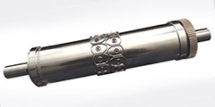

En Wilson, siempre estamos enfocados en los aspectos técnicos de flexografía. Charla técnica es su vistazo rápido a los temas claves de nuestra industria. Déjenos saber que piensa.
Volver a Recursos
Tres Herramientas Esenciales que Todos Profesionales Deben Conocer
Troqueles de vacío, de aire soplado, y de resorte se usan todos los días en esta industria. Pero ¿cuánto realmente sabe acerca de estas herramientas? He aquí un resumen breve de cada una.
Troqueles de Vacío

Troqueles de vacío se usan para remover desgaste aislado del embobinado. Cuando hay una isla en medio de una parte que se tiene que quitar, se debe considerar un troquel de vacío. Los siguientes factores le podrán ayudar a decidir cuándo se debe usar un troquel de vacío:
- El tamaño del desgaste por quitar ha de ser menos del tamaño del eje, porque se aspirará el desgaste para quitarlo a través del eje.
- Considerar el numero de desechos por remover con la aspiración. Si hay demasiados huecos en el troquel, puede perder su integridad y desempeño.
- Necesitará un bloque de eje especial de vacío para sacar los desechos del troquel.
- Ya que los troqueles de vacío se hacen con insertos, hay que examinar si hay cuchillas que se cruzan. También, notar la proximidad de otras cuchillas en el troquel. Recuerde que necesitará sitio suficiente para poner insertos en el troquel.
Troqueles de Aire Soplado

Troqueles de aire soplado se usan para asegurar que la cavidad en el troquel no se empaque con material desgaste y romperse. En raros casos, se pueden usar para remover el desgaste en herramientas para estación fuera de línea, pero nunca 100% del tiempo. Debe considerar lo siguiente al pedir un troquel de aire soplado:
- Número de huecos para el aire soplado en el troquel. Igual que con el troquel de vacío, no quiere comprometer la integridad de la herramienta.
- Hay que mantener 100 libros por pulgada de presión de aire al troquel. Debe considerar no solo la habilidad de su compresor de llegar a 100lpp, pero también el tamaño de su tanque de retención y qué tan rápido el compresor se recupera. Nuevamente, esto dependerá en el número de huecos y qué tan rápido piensa correr el troquel.
- Tipo de material a cortar es otra consideración. Por ejemplo, si el material es una espuma con células abiertas, no es recomendable usar un troquel de aire soplado, ya que el aire tendría muy poca superficie contra qué empujar.
- De ser posible, siempre es mejor tener la parte con aire soplado en un troquel separado. Esto le permite rebobinar el material después de cortarlo y evitar soplar el aire mientras el troquel está cortando contra el yunque.
Troqueles con émbolos de Resorte

Troqueles con émbolos de resorte se usan para los mismos propósitos que troqueles de aire soplado. La ventaja de los émbolos de resortes es que no se tiene que preocupar con la presión de aire porque la eyección se hace mecánicamente con resorte. Considere lo siguiente al pedir un troquel de resorte:
- El tamaño del desgaste por eyectar. La dimensión mínima es 0.200 pulgadas (0.508cm) porque hay que tener espacio suficiente para taladrar e introducir el resorte en el troquel.
- La dimensión entre centros al desarrollo del troquel. Cuando mas grande es la parte por eyectar, mas grande será el émbolo de resorte empleado. Hay que tener espacio y circunferencia suficiente para asegurar que los hoyos taladrados no se intersequen.
- Tipo de material por eyectar también es crítico. Por ejemplo, una espuma muy compresible no seria buen candidato para este tipo de troquel.
- Finalmente, similar al aire soplado, es óptimo tener los émbolos de resorte en un troquel separado. Esto permite tiempo suficiente para que los resortes funcionen.
Es importante entender la herramienta apropiada y sus usos, especialmente cuando sepa que la herramienta correcta mejorará su producto final.
¿Preguntas sobre el acero?
Si tiene preguntas adicionales o pensamientos acerca de cómo la fuerza afecta su aplicación, le invitamos a contactar el equipo técnico de Wilson. Haga clic aquí para contactar a Wilson.